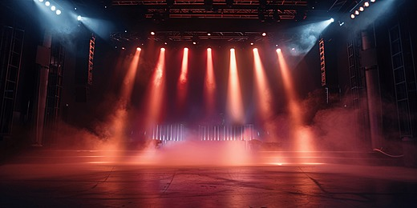
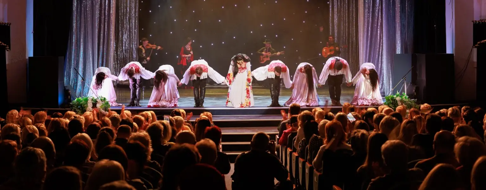
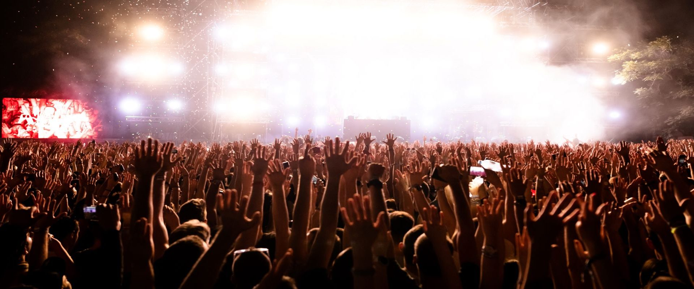
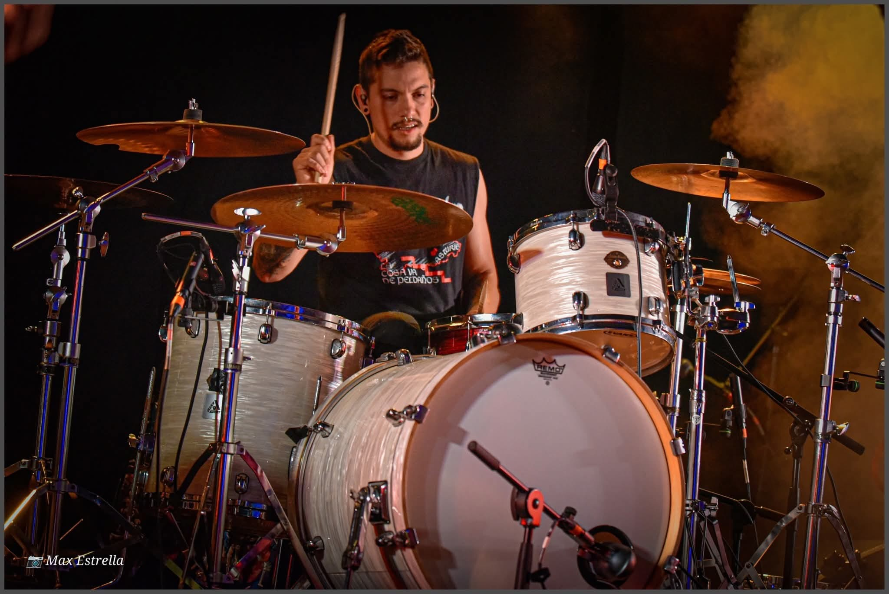

HAPPINESS&Co es una empresa joven y dinámica que se dedica, en cuerpo y alma, al mundo del ocio. Perdidos entre la inmensa marea de actividades culturales que existen cada día en nuestra ciudad, nos dimos cuenta de que hacía falta buscar un poco de orden y estructura en este inmenso océano de posibilidades.

Y así surgió HAPPINESS&Co: una agenda cultural que intenta recopilar y organizar todos los eventos culturales, de cualquier tipo, que tienen lugar en nuestra localidad e inmediaciones. Música, teatro, exposiciones… Todo tiene cabida en nuestra agenda.

Nuestro objetivo es sencillo: que ningún gijonés se pierda un buen plan por falta de información. Trabajamos cada día para que nuestra agenda sea la más completa, actualizada y fácil de usar de toda Asturias.

Desde conciertos íntimos hasta grandes festivales, desde exposiciones de arte contemporáneo hasta obras de teatro clásico: si pasa en Gijón, lo encontrarás en HAPPINESS&Co.
El equipo
Las personas detrás de HAPPINESS&Co
Ana García
Directora y fundadora
Periodista cultural con más de 10 años de experiencia cubriendo el panorama artístico asturiano. Fundó HAPPINESS&Co con la misión de acercar la cultura a todos los ciudadanos.

Andrés Urrego
Director técnico
Desarrollador web y apasionado de la tecnología. Responsable de mantener la plataforma actualizada y garantizar la mejor experiencia de usuario posible.
Marta Sánchez
Responsable de contenidos
Historiadora del arte y crítica cultural. Se encarga de redactar todos los contenidos de la agenda, asegurando información precisa y de calidad.